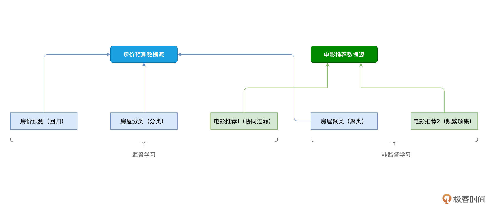
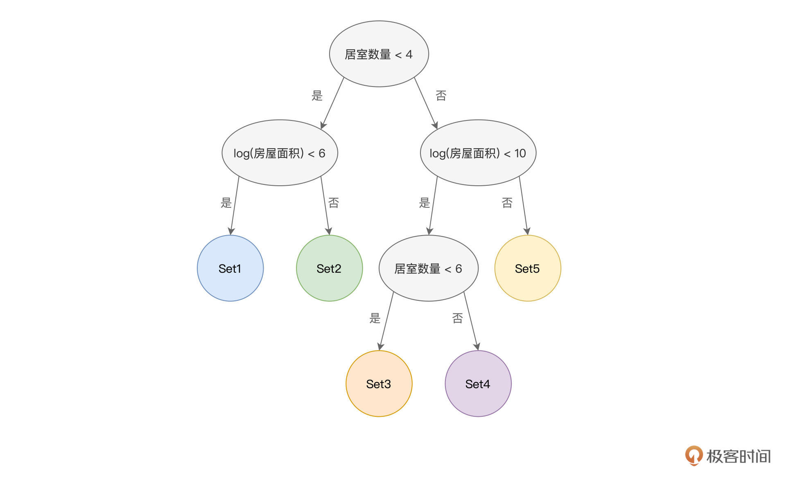
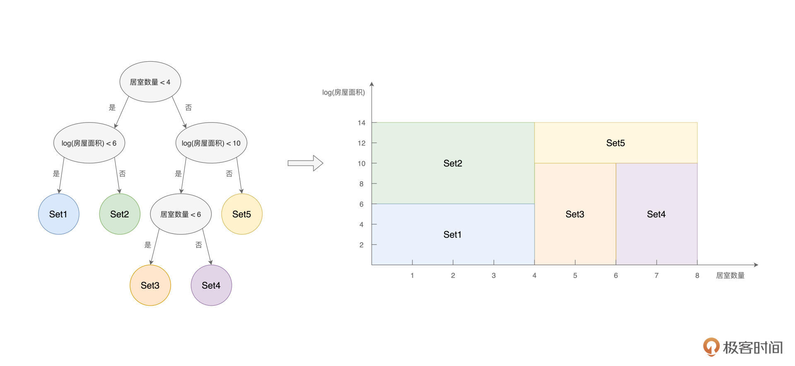
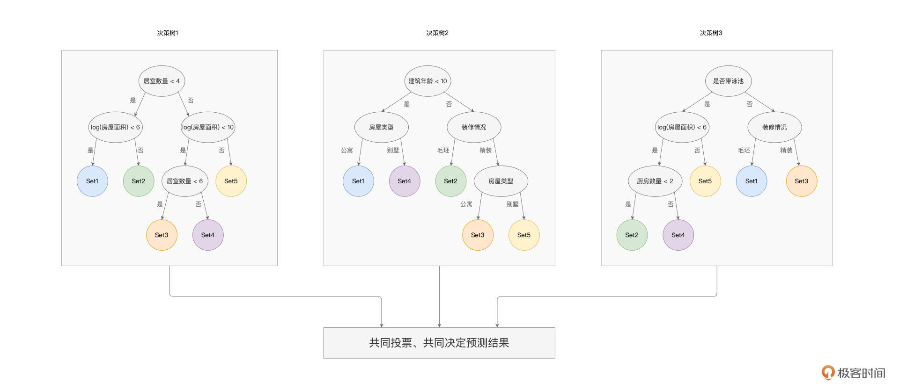
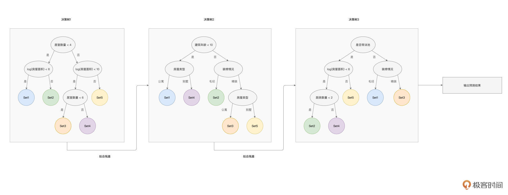
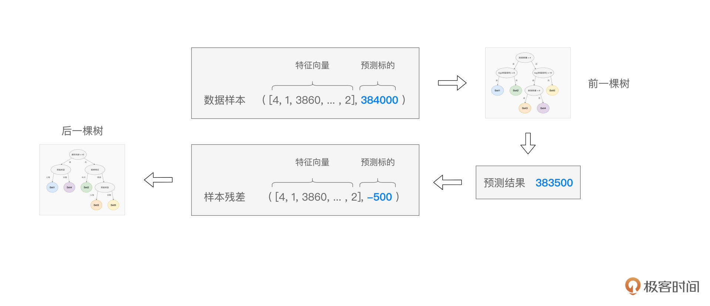

- 00 开篇词 入门Spark，你需要学会“三步走”.md.html
- 01 Spark：从“大数据的Hello World”开始.md.html
- 02 RDD与编程模型：延迟计算是怎么回事？.md.html
- 03 RDD常用算子（一）：RDD内部的数据转换.md.html
- 04 进程模型与分布式部署：分布式计算是怎么回事？.md.html
- 05 调度系统：如何把握分布式计算的精髓？.md.html
- 06 Shuffle管理：为什么Shuffle是性能瓶颈？.md.html
- 07 RDD常用算子（二）：Spark如何实现数据聚合？.md.html
- 08 内存管理：Spark如何使用内存？.md.html
- 09 RDD常用算子（三）：数据的准备、重分布与持久化.md.html
- 10 广播变量 & 累加器：共享变量是用来做什么的？.md.html
- 11 存储系统：数据到底都存哪儿了？.md.html
- 12 基础配置详解：哪些参数会影响应用程序稳定性？.md.html
- 13 Spark SQL：让我们从“小汽车摇号分析”开始.md.html
- 14 台前幕后：DataFrame与Spark SQL的由来.md.html
- 15 数据源与数据格式：DataFrame从何而来？.md.html
- 16 数据转换：如何在DataFrame之上做数据处理？.md.html
- 17 数据关联：不同的关联形式与实现机制该怎么选？.md.html
- 18 数据关联优化：都有哪些Join策略，开发者该如何取舍？.md.html
- 19 配置项详解：哪些参数会影响应用程序执行性能？.md.html
- 20 Hive + Spark强强联合：分布式数仓的不二之选.md.html
- 21 Spark UI（上）：如何高效地定位性能问题？.md.html
- 22 Spark UI（下）：如何高效地定位性能问题？.md.html
- 23 Spark MLlib：从“房价预测”开始.md.html
- 24 特征工程（上）：有哪些常用的特征处理函数？.md.html
- 25 特征工程（下）：有哪些常用的特征处理函数？.md.html
- 26 模型训练（上）：决策树系列算法详解.md.html
- 27 模型训练（中）：回归、分类和聚类算法详解.md.html
- 28 模型训练（下）：协同过滤与频繁项集算法详解.md.html
- 29 Spark MLlib Pipeline：高效开发机器学习应用.md.html
- 30 Structured Streaming：从“流动的Word Count”开始.md.html
- 31 新一代流处理框架：Batch mode和Continuous mode哪家强？.md.html
- 32 Window操作&Watermark：流处理引擎提供了哪些优秀机制？.md.html
- 33 流计算中的数据关联：流与流、流与批.md.html
- 34 Spark + Kafka：流计算中的“万金油”.md.html
- 用户故事 小王：保持空杯心态，不做井底之蛙.md.html
- 结束语 进入时间裂缝，持续学习.md.html
- 捐赠
26 模型训练（上）：决策树系列算法详解
你好，我是吴磊。
在上一讲，我们重点介绍了机器学习中的特征工程，以及Spark MLlib框架支持的特征处理函数。基于线性回归模型，我们对比了不同特征处理方法下的模型效果。一般来说，线性模型的模型容量比较有限，它仅适合拟合特征向量与预测标的之间存在线性关系的场景。
但在实际应用中，线性关系少之又少，就拿“房价预测”的项目来说，不同的房屋属性与房价之间，显然不是单纯的线性关系。这也是为什么在房价预测的任务上，线性回归模型的预测误差一直高居不下。因此，为了提升房价预测的准确度，我们有必要从模型选型的角度，着手去考虑采用其他类型的模型算法，尤其是非线性模型。
Spark MLlib框架支持种类丰富的模型算法，为了在减轻你学习负担的同时，尽量全面地覆盖其中的内容，我把模型训练分为了上、中、下三讲。今天这一讲，我们专注在决策树系列算法的讲解。
后面两讲我再结合房屋预测和电影推荐场景，带你在实践中掌握Spark MLlib模型算法，从而让你在不同的场景下得心应手地开展模型选型与模型调优。
课程安排
因为模型训练的部分内容比较丰富，为了让你有一个清晰的学习计划，咱们还是先来交代一下课程安排。在机器学习领域，如果按照“样本是否存在预测标的（Label）”为标准，机器学习问题可以分为监督学习（Supervised Learning）与非监督学习（Unsupervised Learning）。Spark MLlib同时支持这两大类机器学习算法，如下图所示。

可以看到，在Spark MLlib开发框架下，按照使用场景不同，监督学习又被细分为回归（Regression）、分类（Classification）和协同过滤（Collaborative Filtering）；而非监督学习被细分为聚类（Clustering）与频繁项集（Frequency Patterns）。
不同的分类下，Spark MLlib支持的模型算法多样而又庞杂。如果逐一讲解每种算法的原理和用法，不但枯燥乏味，而且容易遗忘。所以，对于每个分类，我都会精选一个最具代表性的算法，再结合实例进行讲解，这样你学完之后印象会更加深刻。

与5个子分类相对应，模型训练课程的实例也有5个，分别是房价预测、房屋分类、电影推荐1、房屋聚类、电影推荐2。根据数据来源的不同，这5个实例又可以分为两类，如下图所示。
为了照顾基础薄弱的同学，我们需要先搞清楚决策树、GBDT（Gradient-boosted Decision Trees）和RF（Random Forest）这些前置知识。学完这节课之后，你会发现一个很有趣的现象，这些知识点背后的原理跟人类的决策过程惊人的相似，但相比人类经验，机器又能青出于蓝。
好啦，让我们正式开始今天的学习。
决策树系列算法
马上就是“双十一”了，你可能很想血拼一把，但一摸自己的钱包，理智又占领了高地。试想一下，预算有限的情况下，你会如何挑选一款手机呢？我们往往会结合价位、品牌、评价等一系列因素考量，最后做出决策。
其实这个依据不同决定性因素来构建决策路径的过程，放在机器学习里，就是决策树。接下来，我们用严谨一点的术语再描述一下什么是决策树。
决策树（Decision Trees）是一种根据样本特征向量而构建的树形结构。决策树由节点（Nodes）与有向边（Vertexes）组成，其中节点又分为两类，一类是内部节点，一类是叶子节点。内部节点表示的是样本特征，而叶子节点代表分类。
举例来说，假设我们想根据“居室数量”和“房屋面积”这两个特征，把房屋分为5类。那么，我们就可以构建一个决策树，来做到这一点，如下图所示。

其中，椭圆形代表的是内部节点，每个内部节点都包含一个特征，并同时拥有两条有向边。每条有向边，都表示一组特征取值。比方说，图中决策树的根节点（顶端的内部节点）包含的特征是“居室数量”，左边的有向边，表示的是居室数量小于4的数据样本；而右边的有向边，代表的是居室数量大于等于4的数据样本。
就这样，原始的房屋样本被一分为二，按照居室数量被“劈”成了两份。“劈”到左侧的样本，继续按照“房屋面积”是否小于6作区分；而“劈”到右侧的样本，则按照“房屋面积”是否小于10来做进一步的区分。就这样，根据不同特征的不同取值范围，数据样本一层一层地被加以区分，直到圆形节点，也即叶子节点为止。
叶子节点表示数据样本的分类，图中的5个圆形即代表5个叶子节点。每个叶子节点中，都包含若干的数据样本，显然，掉落到同一个叶子节点的样本，同属于一个分类。
不难发现，在上面的决策树中，结合“居室数量”和“房屋面积”这两个特征的不同取值，原始的数据样本被划分成了“不重不漏”的5份子集，如下图所示。

基于这5份样本子集，我们就有能力去解决分类或是回归问题。假设数据样本中的标签列（Label）是“房屋质量”，数据样本，按照房屋质量的取值，被分为差、一般、好、很好和极好。
决策树中的5个叶子节点，对应的就是Label的5个不同取值。因此，凡是掉落在蓝色圆形节点的样本，它的房屋质量都是“差”，同理，凡是掉落在黄色圆形节点的样本，对应的房屋质量都是“极好”。如此一来，我们便按照“房屋质量”完成了对原始样本的分类过程。
实际上，回归过程也是类似的。如果数据样本中的标签不再是离散的“房屋质量”，而是连续的“房屋价格”，那么我们同样可以利用决策树来完成回归预测。假设我们用100条数据样本，来构建上面的决策树，并假设每个叶子节点都包含20条数据样本。
那么，当有一条新的数据样本需要预测房价的时候，我们只需要让它遍历决策树，然后看看它掉落到哪一个叶子节点中去。假设它掉落到了Set3这个节点，那么要预测这条样本的房价，我们就取Set3中那20条样本的房价均值。
好啦，到此为止，我们介绍了什么是决策树，怎么用决策树来预测新的数据样本。不难发现，决策树的推理过程，与人类的决策过程非常相似。
人类也常常“货比三家”，结合生活经验，根据一些关键因素做出决策。说到这里，你可能会好奇：“我做决定的时候，往往是结合生活经验，那么模型算法是依据什么，来构建决策树的呢？它怎么知道，哪些特征是决定性因素，而哪些特征又没什么用呢？”
用一句话来概括，数据样本的纯度，决定了模型算法选择哪些特征作为内部节点，同时也决定着决策树何时收敛。所谓样本纯度，简单地说，就是标签的多样性（Cardinality）。对于一个集合中的样本，如果样本的标签都一样，也即标签的多样性为1，那么我们就说这个集合的样本纯度很高。
相反，如果这个集合中的样本标签取值非常多，多样性非常高，那么我们就说这个集合的样本纯度很低。在数学上，我们可以用信息熵来量化样本的纯度（或者说标签多样性），不过作为入门课，咱们暂时不必深究，只要从概念上理解样本的纯度就好。
模型算法在构建决策树的时候，会去遍历每一个特征，并考察每个特征的“提纯”能力。所谓“提纯”，就是把原始样本结合特征进行区分之后，两个样本子集在纯度上有所提升。换句话说，经过候选特征分割后的样本子集，其纯度越高，就代表候选特征的“提纯”能力越高。
正是基于这样的逻辑，模型算法依次筛选“提纯”能力最高、次高、第三高的特征，逐级地去构建决策树，直到收敛为止。对于收敛条件，一方面我们可以人为地设置纯度阈值，另一方面，我们也可以通过设定树的深度（Depth、Levels）来进行限制。
在理想情况下，我们期望决策树每个叶子节点的纯度，尽可能地接近于0（用信息熵来量化），也即每个节点的标签都是一样的。但在实际工作中，我们很难做到这一点。不仅如此，一般来说，一棵决策树的拟合能力是相当有限的，它很难把样本的纯度提升得足够高。
这时就要说到GBDT（Gradient-boosted Decision Trees）和RF（Random Forest）这两种算法了，尽管它们的设计思想各不相同，但本质上都是为了进一步提升数据样本的纯度。
Random Forest
Random Forest，又叫“随机森林”，它的设计思想是“三个臭皮匠、赛过诸葛亮”。既然一棵树的拟合能力有限，那么就用多棵树来“凑数儿”，毕竟，老话说得好：人多出韩信。
举例来说，我们想结合多个特征，来对房屋质量进行分类。对于给定的数据样本，随机森林算法会训练多棵决策树，树与树之间是相互独立的，彼此之间不存在任何依赖关系。对于每一棵树，算法会随机选择部分样本与部分特征，来进行决策树的构建，这也是随机森林命名中“随机”一词的由来。

以上图为例，随机森林算法构建了3棵决策树，第一棵用到了“居室数量”和“房屋面积”这两个特征，而第二棵选择了“建筑年龄”、“装修情况”和“房屋类型”三个特征，最后一棵树选择的是“是否带泳池”、“房屋面积”、“装修情况”和“厨房数量”四个特征。
每棵树都把遍历的样本分为5个类别，每个类别都包含部分样本。当有新的数据样本需要预测房屋质量时，我们把数据样本同时“喂给”随机森林的3棵树，预测结果取决于3棵树各自的输出结果。
假设样本经过第一棵树的判别之后，掉落在了Set3；经过第二棵树的“决策”之后，掉落在了Set2；而经过第三棵树的判定之后，归类到了Set3，那么样本最终的预测结果就是Set3。也即按照“少数服从多数”的原则，随机森林最终的预测结果，会取所有决策树结果中的大多数。回归问题也是类似，最简单的办法，就是取所有决策树判定结果的均值。
GBDT
接下来，我们再说说GBDT（Gradient-boosted Decision Trees）。与随机森林类似，GBDT也是用多棵决策树来拟合数据样本，但是，树与树之间是有依赖关系的，每一棵树的构建，都是基于前一棵树的训练结果。因此，与随机森林不同，GBDT的设计思想是“站在前人的肩膀上看得更远”，如下图所示。

具体来说，在GBDT的训练过程中，每一棵树的构建，都是基于上一棵树输出的“样本残差”。如下图所示，预测值与真实值（Ground Truth）之间的差值，即是样本残差。后面决策树的拟合目标，不再是原始的房屋价格，而是这个样本残差。

以此类推，后续的决策树，都会基于上一棵树的残差去做拟合，从而使得预测值与真实值之间的误差越来越小，并最终趋近于0。不难发现，只要GBDT训练的决策树足够多，预测误差就可以足够小，因此，GBDT的拟合能力是非常强的。
不过，与此同时，我们要提防GBDT的过拟合问题，在训练集上过分拟合，往往会导致模型在测试集上的表现不尽如人意。解决过拟合的思路，就是让模型由复杂变得简单，要做到这一点，我们可以通过限制决策树的数量与深度，来降低GBDT模型的复杂度。
好啦，到此为止，我们学习了决策树，以及由决策树衍生的随机森林与GBDT算法。光说不练假把式，在下一讲，我们就以房价预测和房屋分类为例，体会一下在Spark MLlib的框架下，具体要如何应用这些算法解决实际问题。
重点回顾
好啦，到此为止，我们今天的内容就全部讲完啦。让我们一起来做个总结。
首先，你需要知道，Spark MLlib开发框架都支持哪些模型算法，我把这些模型算法、以及算法的分类整理到了下面的脑图中，供你随时参考。
你需要掌握决策树系列算法的特点与基本原理。其中，决策树系列算法，既可以用于解决分类问题，也可以解决回归问题。相比线性模型，树模型拥有更强的非线性拟合能力，而且树模型具备良好的可解释性，它的工作原理非常符合人类的思考方式。随机森林与GBDT，是衍生自决策树的两类集成类算法。
随机森林的设计思想是“三个臭皮匠、赛过诸葛亮”，通过在多棵树上随机选取训练样本与特征，随机森林将多个简单模型集成在一起，用投票的方式共同来决定最终的预测结果。
而GBDT的思想是“站在前人的肩膀上看得更远”，它也是基于多棵树的集成模型。与随机森林不同，在GBDT中，树与树之间是存在依赖关系的。每一棵树的训练，都是基于前一棵树拟合的样本残差，从而使得预测值不断地逼近真实值。GBDT的特点是拟合能力超强，但同时要注意决策树过深、过多而带来的过拟合隐患。
每课一练
结合今天的课程内容，你能说说GBDT与Random Forest模型算法各自的优缺点吗？
欢迎你在留言区跟我交流互动，也推荐你把这一讲的内容分享给更多的同事、朋友。
© 2019 - 2023 Liangliang Lee. Powered by gin and hexo-theme-book.